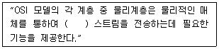
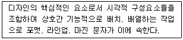
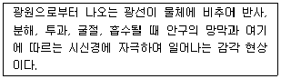
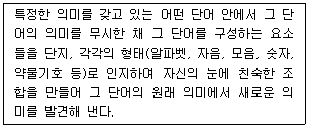
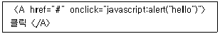
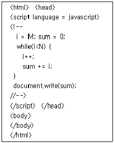
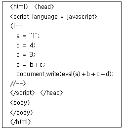

멀티미디어콘텐츠제작전문가(구) (2004-08-08 기출문제)
1과목: 멀티미디어개론
1. 텍스트를 읽는 도중 연관된 자료를 연결하여 즉시 볼 수 있도록 비선형(비순차) 구조로 구현한 텍스트 데이터인 하이퍼텍스트(Hypertext) 시스템의 구성요소 중 링크의 종류가 아닌 것은?
- 탐색 링크(Navigation Link)
- 조직 링크(Organizational Link)
- 참조 링크(Referential Link)
- 키워드 링크(Keyword Link)
(정답률: 알수없음)

2. 다음 중 멀티미디어의 하이퍼미디어(hypermedia) 정보를 구성하는 기본적인 구성 요소가 아닌 것은?
- 프레임(Frame)
- 링크(Link)
- 앵커(Anchor)
- 노드(Node)
(정답률: 알수없음)
3. 웹브라우저에서 직접 보여주지 못하는 사운드나 동영상 파일들을 웹상에서 구현할 수 있도록 브라우저의 기능을 확장시켜주는 프로그램은 무엇인가?
- FTP
- Cookie
- HTML
- Plug-in
(정답률: 알수없음)
4. 이미지와 그래픽 파일 포맷 중에서 벡터 그래픽의 특징으로 볼 수 없는 것은 무엇인가?
- 기하적인 객체들을 나타내는 그래픽 함수로 표현되는 방식으로, 일반적으로 파일의 크기가 래스터 그래픽 방식에 비해 크다.
- 그래픽 소프트웨어 중 그리기 도구를 이용하여 점, 선, 곡선, 원등과 같은 기하적 객체로 생성 한다.
- 화면 확대 시 화질의 저하가 발생하지 않는다.
- 일러스트레이션(illustration)에 적합한 방식이다.
(정답률: 알수없음)
5. 멀티미디어 정보의 통신환경과 관련이 먼 것은?
- 미디어간의 시간적, 공간적 동기화 관계를 유지할 수 있는 통신기술이 요구된다.
- 대용량의 데이터를 빠른 속도로 전송하기 위해서는 초고속 통신기술이 요구된다.
- 정보 제공자가 일방적으로 정보를 공급하는 형태가 되어야 한다.
- 동시에 여러 사용자 또는 시스템간의 정보 전달이 가능한 다자간 통신기능이 필요하다.
(정답률: 알수없음)
6. 다음 중 주소 190.0.46.201의 기본 마스크는?
- 255.0.0.0
- 255.255.0.0
- 255.255.255.0
- 255.255.255.255
(정답률: 알수없음)
7. 다음 중 전기적인 접속 표준과 장치 간에 데이터의 물리적 전송 표준을 개발하는 기구는?
- EIA
- ITU-T
- ANSI
- ISO
(정답률: 알수없음)
8. 다음 중 오렌지북(Orange Book)에서 규정한 저장장치에 해당되지 않는 것은?
- CD-I
- CD-R
- CD-WO
- CD-MO
(정답률: 알수없음)
9. 멀티미디어 데이터의 생성에서 최종 사용자 까지 전달되는 과정을 구분하는 방법이 아닌 것은?
- 개발 매체(Evolution medium)
- 표현 매체(Representation medium)
- 저장 매체(Storage medium)
- 전송 매체(Communication medium)
(정답률: 알수없음)
10. ( ) 안에 들어갈 적당한 단어는?

- 비트
- 메시지
- 프로토콜
- 프로그램
(정답률: 알수없음)
11. "데이터 통신에서 ATM은 ( )의 약어이다." ( )안에 들어갈 적절한 영문은?
- Automatic Teller Machine
- Asynchronous Transfer Mode
- Automatic Transmission Model
- Asynchronous Telecommunication Method
(정답률: 알수없음)
12. OSI 모델 계층에서 전송계층의 주요 기능은?
- 동기화
- 노드-대-노드 전달
- 프로세스-대-프로세스 메시지 전달
- 라우팅 표의 갱신과 유지보수
(정답률: 알수없음)
13. 다음 중 멀티미디어 정보검색을 위한 내용 표현을 목표로 하고 있는 압축 기법은?
- MPEG-1
- MPEG-2
- MPEG-4
- MPEG-7
(정답률: 알수없음)
14. 고화질 디지털 방송을 위해 ISO 산하 MPEG 위원회에서 규정한 국제표준은?
- MPEG-1
- MPEG-2
- MPEG-4
- MPEG-21
(정답률: 알수없음)
15. 오디오 파형을 디지털화하는데 있어 표본화율(Sampling rate)에 대한 설명으로 옳지 않은 것은?
- 표본화율이 높을수록 원음에 가깝다.
- 표본화율이 높을수록 데이터양이 줄어든다.
- 44,100Hz라는 표본화율은 22,⑤0Hz의 주파수 까지 표현할 수 있다.
- 나이퀴스트(Nyquist)의 표본화 법칙을 활용한다.
(정답률: 알수없음)
16. 다음 이미지 및 그래픽의 칼라 모델에서 가산모델의 3원색에 들지 않는 것은?
- Yellow
- Green
- Blue
- Red
(정답률: 알수없음)
17. CRT 모니터에 대한 설명 중 활성화율(Refresh Rate)에 대하여 가장 적절하게 설명한 것은?
- 편광판에 가해지는 전압의 크기를 나타낸다.
- 단위 영역 당 픽셀의 개수를 나타내는 비율이다.
- 초당 화면이 몇 번 칠해지는가를 나타내는 회수이다.
- 전자빔이 특정 위치의 형광물질에 도달되는 회수를 나타낸다.
(정답률: 알수없음)
18. 다음은 그래픽 카드의 종류를 나타낸다. 다음 중 가장 높은 해상도를 나타내는 것은?
- TVGA
- XVGA
- EGA
- SVGA
(정답률: 알수없음)
19. CD-ROM의 성능은 주기억 공간으로의 데이터 전송속도로 표현하며 보통 배속으로 표시하는데 이때, 1배속의 속도는 얼마인가?
- 100Kbps
- 150Kbps
- 200Kbps
- 250Kbps
(정답률: 알수없음)
20. 우리나라에서 채택한 NTSC 방식의 TV화상은 초당 몇 프레임을 사용하는가?
- 1초당 15 프레임
- 1초당 24프레임
- 1초당 30 프레임
- 1초당 34프레임
(정답률: 알수없음)
21. 애니메이션의 특수효과 기법 중 어떤 사물의 형상을 다른 모습의 형상으로 점진적으로 변화해 가는 모습을 보여주는 것을 무엇이라 하는가?
- 프레임(Frame)
- 렌더링(Rendering)
- 모핑(Morphing)
- 샘플링(Sampling)
(정답률: 알수없음)
22. 아날로그(Analog) 이미지를 디지털화하는 과정에 있어 양자화(Quantization)에 대한 설명으로 올바른 것은?
- 아날로그 값의 샘플을 픽셀로 표현하는 것이다.
- 연속적인 색상의 값을 이산치(화소값)로 변환하는 것을 말한다.
- 위치를 나타내는 연속적인 데이터를 일정간격으로 나누는 작업을 나타낸다.
- 아날로그 값의 샘플을 모니터에 출력하는 작업을 나타낸다.
(정답률: 알수없음)
23. 3차원 사이버스페이스를 텍스트 형태로 기술하기 위한 모델링 언어로 기본적인 물체들의 조합으로 표현 가능하며 웹상에서도 사이버스페이스를 구축 가능하게 하는 언어는?
- SGML
- XML
- VRML
- HTML
(정답률: 알수없음)
24. 파일 압축 방법 중 동일한 값을 가지는 픽셀들이 인접하게 모여 있는 특성을 압축 방법에 이용한 것으로써 영상의 종류에 따라 압축률이 크게 달라지는 압축 방법은 무엇인가?
- RL(Run Length) 코딩 방법
- 보정(interpolation) 방법
- 예측 기법(Predictive Techniques)
- 색상표(Color Lookup Table)를 이용하는 방식
(정답률: 알수없음)
25. 다음 중 셀 애니메이션(Cel Animation)과 관련이 먼 것은?
- 셀은 셀룰로이드(Celluloid)를 의미한다.
- 하나의 배경 셀과 여러 장의 전경 셀을 필요로 한다.
- 여러 개의 셀이 몇 겹의 층을 이루어 하나의 화면을 만들어 낸다.
- 애니메이션을 구성하는 모든 프레임을 일일이 그려나가는 것이다.
(정답률: 알수없음)
2과목: 멀티미디어기획및디자인
26. 기본적 마케팅의 기능 중 "크기, 무게 등을 위해 확립된 양식 및 질적 통제 기준 확보"에 해당하는 기능은?
- 정보수집
- 수송
- 표준화의 등급화
- 보관
(정답률: 알수없음)
27. 디자인의 요소들 간의 관계를 원활하게 유지하기 위하여 적용되는 조건은?
- 합목적성
- 심미성
- 질서성
- 경제성
(정답률: 알수없음)
28. 다음 중 디자인의 시각 요소에 속하지 않는 것은?
- 크기(Size)
- 모양(Shape)
- 배경(Background)
- 비례(Proportion)
(정답률: 알수없음)
29. 디자인 시 편안하고, 안정적인 느낌을 주는 정렬은?
- 곡선
- 사선
- 수직
- 수평
(정답률: 알수없음)
30. 시각디자인 중 공간(4차원)디자인에 포함되는 것은?
- 포토디자인
- 일러스트레이션
- 애니메이션
- 타이포그래피
(정답률: 알수없음)
31. 멀티미디어 제작물에서 텍스트를 이미지로 전환한 글자 표현 시 옳은 것은?
- 수정이 용이하다.
- 데이터의 크기가 작다.
- 편집, 검색이 가능하다.
- 디자인 결과가 언제나 유지된다.
(정답률: 알수없음)
32. 멀티미디어 인터페이스 디자인에서 색 표현 방식으로 적합하지 않은 방식은?
- HSB
- YUV
- RGB
- CMY
(정답률: 알수없음)
33. 멀티미디어 디자인의 요소 중 시각적 요소의 상호작용에 의해 방향감, 공간감, 위치감, 중량감의 변화를 느낄 수 있는 요소는 무엇인가?
- 상관요소
- 시각요소
- 개념요소
- 실제요소
(정답률: 알수없음)
34. 책의 장, 절 형식의 구조를 멀티미디어로 전환하는 구조로서 메뉴가 많을 경우 유사한 내용끼리 묶어서 사용하면 효과적이지만 사용자는 자신이 얼마만큼 범위의 정보를 얻을 수 있는지 알기 어려운 단점을 가진 멀티미디어 구조 형식은?
- 계층 구조
- 선형 구조
- 혼합 구조
- 하이퍼텍스트 구조
(정답률: 알수없음)
35. 웹 컨텐츠 제작 시 이미지 파일이나 애니메이션 파일 용량을 줄일 수 있도록 256가지 이하의 색상으로 이미지를 표현하는 모드를 무엇이라고 하는가?
- JPG모드
- Indexed color모드
- CMYK모드
- RGB 모드
(정답률: 알수없음)
36. 색의 3가지 속성이 아닌 것은?
- 색상
- 명도
- 채도
- 대비
(정답률: 알수없음)
37. 다음 중 점의 동적 정의를 설명한 것은?
- 점의 이동의 흔적
- 위치만 있고 크기는 없다.
- 면의 한계 또는 면의 교차
- 물체가 차지하고 있는 한정된 공간
(정답률: 알수없음)
38. 다음 그래픽디자인 요소 중 선에 대한 설명이 아닌 것은?
- 공간에 있는 방향성과 길이가 있다.
- 일반적 의미는 실과 같다.
- 색과 결합하여 공간감이나 입체감을 나타낸다.
- 크기가 없는 점의 연장으로서 점의 이동에 따라 직선, 곡선이 생성된다.
(정답률: 알수없음)
39. 배색에 관한 설명으로 옳지 않는 것은?
- 배색은 한 부분에서만 효과를 보는 것이 아니라 문자나 그림 등과 같이 조합이 되었을 때 복합적인 효과가 나타난다.
- 보색에 의한 배색은 그림 전체의 색채와는 원만한 조화를 얻기 어려우므로 강조의 효과를 얻고자 할 때 적절히 사용한다.
- 동일 배색 사이에서는 명도, 채도의 차이가 발생하지 않는다.
- 이미지를 결정시키는 배색의 주요 요인으로 톤, 색상형, 대비량의 항목 등이 있다.
(정답률: 알수없음)
40. 다음 중 밝기가 다른 두 색을 인접시켰을 때 서로의 영향으로 밝은 색은 더욱 밝아 보이고 어두운 색은 더욱 어두워 보이는 현상을 무엇이라고 하는가?
- 색상대비
- 보색대비
- 명도대비
- 한난대비
(정답률: 알수없음)
41. 다음 중 가법혼색의 RGB 세 가지 색상을 혼합 시 나타나는 컬러를 웹 컬러 숫자(Web Color Number)로 바르게 표현한 것은?
- #000000
- #FFFFFF
- #999999
- #333333
(정답률: 알수없음)
42. 3차원 모델링에서 물체에 질감을 표현하기 위한 기능은?
- Blend
- Mapping
- Dithering
- Material
(정답률: 알수없음)
43. 다음 중 디자인에서 형태의 분류가 바르게 짝지어진 것은?
- 이념적 형태-순수형태, 자연형태
- 이념적 형태-순수형태, 추상적형태
- 현실적 형태-자연형태, 추상적형태
- 현실적 형태-순수형태, 인위적형태
(정답률: 알수없음)
44. 다음 중 포스터디자인에 관한 설명으로 틀린 것은?
- 원래 기둥이나 벽보를 의미한다.
- 선전도구나 광고매체라고도 한다.
- 편집디자인에서 가장 중요한 부분을 차지한다.
- 일정한 지면위에 그림, 사진, 문안 등을 통하여 한눈에 볼 수 있도록 메시지를 전달한다.
(정답률: 알수없음)
45. 아이디어 발상 단계에서 행하는 스케치 표현 방법 중 가장 초보적인 단계로 구상된 아이디어나 이미지를 간략하게 그리며, 컬러링이나 세부적인 묘사는 생략하고 이미지나 구성을 중심으로 그리는 방법은 무엇인가?
- 스크래치 스케치
- 러프 스케치
- 스타일 스케치
- 랜더링
(정답률: 알수없음)
46. TV 칼라 CM에 관한 설명 중 틀리는 것은?
- 색채의 계시적인 배색법을 고려해야 한다.
- 재현성이 좋은 색과 그렇지 않는 색들이 있다.
- 일반 색채와는 달리 고채도의 색조가 생긴다.
- 짧은 시간이므로 한 가지 색조로 일관하는 것이 좋다.
(정답률: 알수없음)
47. 포장디자인 구성요소 중 표면디자인에 해당하지 않는 것은?
- Layout
- Color
- Concept
- Typography
(정답률: 알수없음)
48. 다음 설명은 편집디자인의 구성요소 중 무엇인가?

- 인쇄기법
- 레이아웃
- 일러스트레이션
- 타이포그래피
(정답률: 알수없음)
49. 다음 설명은 디자인 요소 중 무엇에 관한 설명인가?

- 빛
- 색채
- 질감
- 형태
(정답률: 알수없음)
50. 다음 설명은 타이포그래피의 표현 중 무엇에 해당하는가?

- 분리와 결합
- 강조
- 의미와 형태
- 반복과 대조
(정답률: 알수없음)
3과목: 멀티미디어저작
51. 학습 내용을 개별 학습자 스스로 할 수 있도록 프로그램을 통하여 학습내용을 제공하고, 학습자의 이해도를 측정하여 결과에 따라 새로운 자료나 추가 내용을 제공하여 학습목표에 도달하게 하는 멀티미디어 개발 모형은?
- 개인교수형
- 교수게임형
- 대화형
- 시뮬레이션형
(정답률: 알수없음)
52. 컴퓨터의 그래픽, 사운드, 애니메이션 등과 같은 기능을 이용하여 실제 조건과 유사한 경험을 통해 학습 내용을 이해하고 문제를 해결하도록 하는 멀티미디어 개발 모형은?
- 개인교수형
- 교수게임형
- 대화형
- 시뮬레이션형
(정답률: 알수없음)
53. “사용자의 여러 가지 반응에 따라 분기하고 사용자의 선택에 따라 보다 상세한 내용을 표시하는 형태”는 멀티미디어 저작도구의 어떤 기능에 해당하는가?
- 확장 기능
- 스크립트 기능
- 프로그램 기능
- 상호작용 기능
(정답률: 알수없음)
54. 멀티미디어 저작도구의 저작방식에 따른 분류 중 흐름도 방식의 설명으로 옳지 않은 것은?
- 스크립트언어를 사용하지 않고도 타이틀을 쉽게 만들 수 있다.
- 다양한 제어구조로 인해 하이퍼미디어 형태의 타이틀 저작에 적합하다.
- 각 아이콘에 파라미터를 지정하여 내용을 추가해 나가는 방식이다.
- 슬라이드쇼나 프레젠테이션 등을 목적으로 하는 타이틀의 제작에 적합하다.
(정답률: 알수없음)
55. CD-ROM타이틀 제작 시, portfolio.exe라는 파일을 자동 실행시키고자 한다. autorun.inf 파일 소스로 적절한 것은?
- [autorun] start=portfolio.exe
- [autorun] open=portfolio.exe
- [autorun.inf] open=portfolio.exe
- [autorun.inf] start=portfolio.exe
(정답률: 알수없음)
56. C, sed, awk, sh와 같은 언어나 프로그램들의 장점을 취합하였으며, 많은 운영체제에 포팅되어 있어 소스파일의 이식성이 뛰어난 프로그래밍 언어는?
- FORTRAN
- Perl
- REXX
- JavaScript
(정답률: 알수없음)
57. 1987년에 소개된 상용 저작 도구 HyperCard에서 사용되는 스크립트 언어는 무엇인가?
- Lingo
- Open Script
- HyperTalk
- Visual Script
(정답률: 알수없음)
58. 다음 중 XML에 대한 설명으로 잘못된 것은 무엇인가?
- 프로세싱 명령의 끝은 '?＞'이다.
- 이름은 대소문자를 구분하지 않는다.
- XML은 인터넷에서 태그들의 이름 충돌을 피하기 위해 이름영역(namespace)를 지원한다.
- XML은 UTF-8과 UTF-16을 지원하며 시스템 식별자로 URL을 다룰수 있는 파서를 정의하고 있다.
(정답률: 알수없음)
59. LISP에 객체지향 프로그래밍 개념이 첨가된 언어는?
- C
- C＋＋
- CL
- Ada
(정답률: 알수없음)
60. 객체지향의 핵심요소 중 메시지에 대한 세 가지 구성 요소가 아닌 것은?
- 계층구조
- 메시지를 받을 객체의 이름(주소)
- 실행을 원하는 메소드(Method)에 전달할 매개변수
- 송신객체가 실행을 원하는 수신객체의 메소드(Method) 이름
(정답률: 알수없음)
61. 다음 중 플래시 MX에서 인스턴스네임을 지정할 수 없는 오브젝트는 무엇인가?
- 버튼인스턴스
- 그래픽인스턴스
- 텍스트필드
- 무비클립인스턴스
(정답률: 알수없음)
62. 플래시 무비의 최적화에 대한 설명으로 잘못된 것은?
- 텍스트를 많이 사용할 때는 안티알리아스 처리가 되지 않는 텍스트를 사용한다.
- 트위닝 애니메이션을 사용하는 것보다 키프레임 애니메이션을 사용하는 것이 파일용량을 줄이는 방법이다
- 점선 등의 특수한 선을 선택하면 실선을 사용하는 것보다 파일용량을 많이 차지하게 된다.
- 많은 텍스트폰트를 사용하면 파일용량이 커지므로 가능한 여러 텍스트폰트를 사용하지 않는 것이 좋다.
(정답률: 알수없음)
63. 플래시MX의 액션스크립트를 이용하여 자바스크립트 내장함수를 실행시키는 구문으로 맞는 것은?
- JavaScript:alert('FlashMX and JavaScript');
- JavaScript("javascript:alert('FlashMX and JavaScript');");
- getURL:alert('FlashMX and JavaScript');
- getURL("javascript:alert('FlashMX and JavaScript');");
(정답률: 알수없음)
64. 플래시에서 사운드 삽입 시 파일 최적화를 위해 mp3파일을 임포트시키지 않고, mp3파일을 직접 스트리밍할 수 있게 해주는 액션은?
- addSound
- openSound
- loadSound
- insertSound
(정답률: 알수없음)
65. 플래시 플레이어에서 독립실행 프로젝트 실행 및 풀스크린, 닫기 기능 등을 부여해줄 수 있는 액션은?
- LoadVariables
- setProperty
- FS Command
- tellTarget
(정답률: 알수없음)
66. 플래시에서 마우스 커서가 움직이는 대로 무비클립이 따라 다니도록 지정해주는 액션은?
- fscommand
- startDrag
- stopDrag
- Drag&Drop
(정답률: 알수없음)
67. 디렉터에서 Xtras를 추가해야 사용할 수 있는 비디오 파일 포맷은?
- XDM
- MPEG
- MOV
- AVI
(정답률: 알수없음)
68. 자바(Java)개발 환경에서 컴파일 과정 후에 생성되는 코드 확장자는?
- *.mov
- *.java
- *.zip
- *.class
(정답률: 알수없음)
69. 자바스크립트의 논리 연산자 중 배타적 논리합(XOR)의 의미를 갖는 연산자?
- ^
- ||
- !
- &&
(정답률: 알수없음)
70. 다음 JavaScript에서 오류가 발생하는 이유는?

- 인용 부호에 문제가 있다.
- ＜A＞태크에서는 onclick 이벤트를 사용할 수 없다.
- 소괄호 대신 대괄호를 사용해야 한다.
- javascript:alert가 아니라 alert를 사용해야 한다.
(정답률: 알수없음)
71. CSS(Cascading Style Sheet)의 태그 중 font-weight가 하는 역할은 무엇인가?
- 글꼴 굵기
- 글꼴 크기
- 자간 조절
- 라인을 이용한 장식
(정답률: 알수없음)
72. 다음 중 HTML에서 bgproperties="fixed"와 같은 기능을 하는 CSS(Cascading Style Sheet)는 무엇인가?
- background-position
- background-attachment
- letter-spacing
- line-height
(정답률: 알수없음)
73. HTML의 기본문법에 대한 설명으로 옳은 것은?
- ＜BR＞태그는 ＜/BR＞가 하나의 쌍으로 사용된다.
- 태그에 사용되는 영문자의 대·소문자를 구별한다.
- ＜IFRAME＞ 태그를 이용하여 현재 웹페이지에 다른 웹페이지 또는 콘텐츠를 출력할 수 있다.
- 한 칸 이상의 공백은 스페이스바를 이용하여 띄어준다.
(정답률: 알수없음)
74. 다음과 같은 식에서 sum의 값이 1부터 10까지의 합이 되기 위한 M과 N의 값으로 맞는 것은?

- M=1, N=9
- M=1, N=10
- M=0, N=9
- M=0, N=10
(정답률: 알수없음)
75. 다음과 같이 HTML 소스가 실행되어 브라우저에 나타나는 값으로 맞는 것은?

- 14343
- 1437
- 177
- 15
(정답률: 알수없음)
4과목: 멀티미디어제작기술
76. 정지 사진이나 한 장의 그림에 해당되는 영상의 시간적 최소단위는?
- Scene
- Shot
- Frame
- Cut
(정답률: 알수없음)
77. 미국전자기술자협회에서 표준화한 Serial bus의 규격은?
- SCSI
- USB
- IEEE 1394
- IDE
(정답률: 알수없음)
78. 동영상 압축 기법의 설명으로 옳지 못한 것은?
- 서브샘플링기법: 주어진 영상 정보 중 필요한 일부정보만을 선택하여 압축하는 기법
- 주파수차원 변환기법: 3차원 평면의 픽셀을 색상별로 정하여 압축하는 기법
- 동작보상기법: 연속적인 동작을 표현할 때 기본 동작에서 벡터 정보만을 추출하여 압축하는 기법
- 델타프레임기법: 두 화면의 큰 차이가 없는 경우 미세한 차이점만을 선택하여 압축하는 기법
(정답률: 알수없음)
79. 아날로그 사운드를 디지털로 변환하는 과정 중에 발생하는 지터(Jitter) 에러의 설명으로 옳은 것은?
- 가청 주파수보다 높은 고주파 성분 발생으로 인한 에러
- 디지털 신호의 전달 과정에서 일어나는 시간축상의 오차
- 아날로그 파형을 양자화 비트로 표현하면서 발생하는 값의 차이
- 사운드에 원래 고주파 성분이었던 울림이 없어지고 저주파수의 방해음이 발생하는 것
(정답률: 알수없음)
80. 다음 중 디지털 영상 편집의 목적이 아닌 것은?
- 컷의 최소화
- 정보의 압축
- 의미의 심화
- NG 부분의 제거
(정답률: 알수없음)
81. 투광기 조명으로 그림자가 있고 입체감이 강한 조명은?
- 컬러 라이트
- 크로스 라이트
- 플랫 라이트
- 스포트 라이트
(정답률: 알수없음)
82. 동시녹음으로 녹음한 대사의 음질이 불량하거나, 비디오 촬영 당시 동시녹음이 여의치 않아 비디오 편집 후, 녹음 스튜디오에서 다시 녹음하여 현장감 있게 편집하는 것을 무엇이라고 하는가?
- Conform
- Insert
- ADR
- Foley
(정답률: 알수없음)
83. 다음 중 방송용 비디오 압축방식인 인트라프레임(Intra frame)에 대한 설명으로 맞는 것은?
- 비손실 압축방식이다.
- 포스트프로덕션 과정에 주로 쓰인다.
- 디지타이징 과정을 거치는 모든 비디오 프레임을 분석하는 수학적인 알고리즘을 이용하는 압축방식이다.
- 외피타입의 압축으로 집단적 프레임이나 그림들을 분석하고 샘플링 된 프레임을 이용하는 압축방식이다.
(정답률: 알수없음)
84. 다음 중 동영상의 확장자 종류가 아닌 것은?
- AVI
- MOV
- ASF
(정답률: 알수없음)
85. 실제의 소리를 디지털 방식으로 직접 녹음하여 그것을 편집하여 악기나 효과음 등으로 이용할 수 있도록 한 것을 무엇이라 하는가?
- 드럼 모듈
- 샘플러
- 믹서
- 신디사이저
(정답률: 알수없음)
86. MPEG-2 비디오 압축 방식의 설명이 잘못된 것은?
- MPEG-1에 대한 순방향 호환성을 지원한다.
- MJPEG 포맷(Motion JPEG포맷)을 지원한다.
- 목표 전송율은 1.5 Mbits/sec 이하이다.
- 순차주사(Noninterlace)방식과 격행주사(Interlace)방식 모두를 지원한다.
(정답률: 알수없음)
87. 오디오 신호처리에 있어, 다이나믹 콘트롤 프로세싱의 종류 중 게이트(Gate)에 대한 설명으로 옳은 것은?
- 악기가 연주되지 않을 경우 주변노이즈 또는 시스템 노이즈를 차단하는 역할을 한다.
- 신호의 라우드(loud)한 부분을 낮게 함으로서 보다 고른 신호레벨의 특성을 보이도록 한다.
- 세팅된 쓰레숄드(Threshold)지점 이상으로 신호레벨이 전해지지 않도록 레벨에 대한 제한을 가한다.
- 쓰레숄드(Threshold)레벨지점 아래에 위치하는 신호를 익스팬션을 사용하지 않은 경우보다 낮은 레벨 특성이 나타나도록 한다.
(정답률: 알수없음)
88. 디지털 영상으로 만들어진 데이터를 극장용 필름의 규격에 맞게 출력하는 작업을 무엇이라 하는가?
- 샘플링(Sampling)
- 텔레시네(Telecine)
- 키네스코핑(Kinescoping)
- D-6
(정답률: 알수없음)
89. Microsoft사와 IBM사가 PC 환경에서 사운드 표준 포맷으로 공동 개발한 사운드 포맷은?
- MID
- AU
- RMI
- WAV
(정답률: 알수없음)
90. 하나의 화면이 서서히 사라지면서 다른 화면이 나타나는 화면전환 기법은?
- 컷(Cut)
- 달리(Dolly)
- 디졸브(Dissolve)
- 와이프(Wipe)
(정답률: 알수없음)
91. 다음 중 미디를 설명한 것 중 잘못된 것은?
- 미디는 조옮김을 쉽게 할 수 있다.
- 미디파일은 WAV파일에 비하여 매우 작다.
- 미디는 음악의 빠르기를 쉽게 변환할 수 있다.
- 미디는 어떤 음원에서도 동일한 음질로 들을 수 있다.
(정답률: 알수없음)
92. 스트리밍 기술에 대한 설명으로 옳지 않은 것은?
- 인터넷 방송 등의 서비스를 제공한다.
- 데이터를 실시간으로 사용자 PC에 전송해 준다.
- 네트워크 대역폭에 영향을 받지 않는다.
- 순서가 있는 연속적인 멀티미디어 데이터 묶음을 말한다.
(정답률: 알수없음)
93. 일반적인 오디오CD의 샘플링주파수와 샘플링 비트수는?
- 32.0kHz, 8bit
- 32.0kHz, 16bit
- 44.1kHz, 8bit
- 44.1kHz, 16bit
(정답률: 알수없음)
94. 다음 중 일반적인 비디오 압축 방법이 아닌 것은?
- 프레임 크기의 축소
- 프레임 수의 축소
- 고정길이 부호화 축소
- 픽셀 당 컬러 비트 수의 축소
(정답률: 알수없음)
95. 마이크 입력 신호의 세기가 지나치게 커서 오디오 콘솔의 마이크 프리앰프 부분을 오버로드하는 경우 이를 막기 위하여 다음 중 어떤 기능을 적용하여야 하는가?
- Mute 기능
- Solo 기능
- PAD 기능 적용
- PFL 스위치를 눌러 적용
(정답률: 알수없음)
96. 다음 중 디지털 비디오의 장점이 아닌 것은?
- 신호의 다중화로 전송회선을 절약할 수 있다.
- 노이즈와 왜곡에 대해서 강한 면역성을 가진다.
- 압축으로 정보량을 크게 줄일 수 있다.
- 디지털화에 의한 화질 왜곡이 전혀 발생하지 않는다.
(정답률: 알수없음)
97. 3D 그래픽스에서 물체 표면에 엠보싱 효과를 나타낼 때 사용하는 매핑 방법은?
- 솔리드 텍스쳐 매핑
- 텍스쳐 매핑
- 범프 매핑
- 솔리드 매핑
(정답률: 알수없음)
98. 3D 애니메이션을 생성하는 방법 중 Curve등의 경로를 따라 이동하는 경로 애니메이션은?
- In between Animation
- Key Frame Animation
- Motion Path Animation
- Motion Capture
(정답률: 알수없음)
99. 다음 중 오디오 컴프레서(Compressor)의 파라미터(Parameter)가 아닌 것은?
- 주파수(Frequency)
- 비율(Ratio)
- 어택 타임(Attack Time)
- 쓰레숄드(Threshold)
(정답률: 알수없음)
100. 디지털 오디오에서 다이나믹 시그날 프로세서(Dynamic Signal Processor)를 설명한 것 중 옳은 것은?
- 시그날의 다이나믹범위를 늘린다.
- 노이즈의 특성이 증대된다.
- 대표적인 것으로 컴프레서 리미트와 게이트가 있다.
- 라우드와 소프트레벨간의 변화를 반드시 수동으로 조정해야한다.
(정답률: 알수없음)